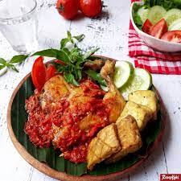

Resep Ayam Penyet

Bahan
- 1 Kg ayam
- minyak goreng secukupnya
- 4 helai daun salam
- 1 batang serai
- 4 helai daun cengkeh
- 4 helai daun kayu manis
- 3 helai daun jeruk
- 1 ruas jahe
- 4 siung bawang putih
- 7 siung bawang merah
- garam secukupnya
- 2 cm lengkuas
Langkah
-
Campurkan ayam dengan bumbu halus, daun salam, serai, daun cengkeh,
daun kayu manis, daun jeruk, dan air secukupnya. Masak dengan atas
api kompor sedang hingga air berkurang.
-
Setelah ayam ungkep matang, panaskan minyak goreng, goreng ayam
dengan api sedang hingga matang. Kemudian tiriskan.
-
Goreng cabai, terasi, cabai rawit, bawang merah, bawang putih dan
tomat dengan api kecil selama satu menit.
-
Setelah bahan sambal digoreng, ulek semua bahan hingga halus,
tambahkan garam dan gula merah sesuai selera. Penyet ayam goreng
dengan sambal yang sudah diulek. Ayam penyet siap disantap.